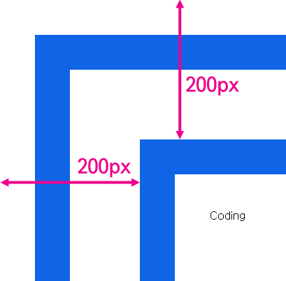

만약 엘리먼트가 중첩되어 있다면 어떻게 될까?
위와 같이 엘리먼트를 중첩했을 때 coding 엘리먼트와 문서와의 거리는 200px이다. getBoundingClientRect의 실행 결과는 다음과 같다.
bottom: 500즉 엘리먼트의 위치를 의미하는 top, left의 값을 통해서 기준이 그 부모가 아니라 body라는 것을 알 수 있다. 그리고 이를 명시적으로 확인할 수 있는 방법은 offsetParent 속성을 호출하는 것이다. 만약 부모 중 CSS position의 값이 static인 td, th, table 엘리먼트가 있다면 이 엘리먼트가 offsetParent가 된다.
오래된 브라우저에서는 getBoundingClientRect를 지원하지 않을 수 있기 때문에 이런 경우 offsetLeft와 offsetTop 프로퍼티를 사용한다.
테두리를 제외한 엘리먼트의 크기를 알고 싶다면 ClientWidth, ClientHeight를 사용한다